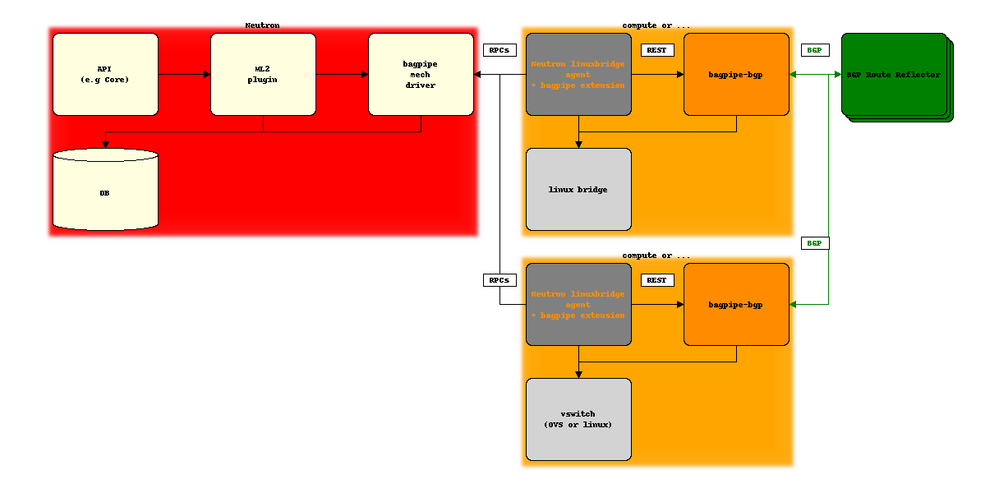
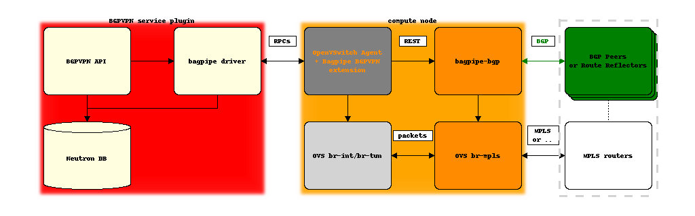

Applications¶
Neutron L2¶
Note
This application is distinct from the use of BaGPipe to create BGPVPN interconnections in the context of the BGPVPN Interconnection API (see below).
The bagpipe mechanism driver for Neutron’s ML2 core plugin, when enabled
along with the corresponding compute node agent extension, will result in
Neutron tenant networks to be realized with E-VPN.
How it works is that bagpipe ML2 driver will allocate a BGP VPN identifier
(called a BGP “Route Target”) for each Neutron tenant network, and the
bagpipe agent extension on compute node will exchange messages (typically
via RabbitMQ) with Neutron server to setup a corresponding E-VPN instance with
this identifier on the local bagpipe-bgp instance on the compute node and
attach ports to this instance as needed.

This solution is currently supported with the linux networking stack (i.e. with the linuxbridge agent enabled with bagpipe extension, and bagpipe-bgp driver for the linux bridge VXLAN implementation). The approach would be easily extended to support OpenVSwitch as well.
Another wait to understand this approach for someone coming with a Neutron ML2 background is that it is similar to the l2pop behavior except that the bridge forwarding entries are populated based on BGP VPN routes rather than based on RPCs. This similarity comes with a difference: while l2pop announces the information on one messaging topic, each compute node receiving information about all Neutron networks even the ones not present on its vswitch, the behavior with BaGPipe ML2 is that a compute node will only receive the mappings that it needs.
Neutron BGPVPN Interconnection¶
Note
This application is distinct from the use of BaGPipe to realize
Neutron networks with BGP E-VPNs, and bagpipe driver for
networking-bgpvpn does not rely on bagpipe ML2 mechanism driver.
This application of networking-bagpipe aims at proposing a lightweight
implementation of the BGPVPN service plugin, designed to work with the ML2
openvswitch mechanism driver (or as an alternative with the bagpipe
ML2 mechanism driver).
When used along with the openvswitch ML2 mechanism driver, it involves:
bagpipedriver for the BGPVPN service plugin (networking-bgpvpn package)bagpipe_bgpvpnextension for the OpenVSwitch compute node agent (networking-bagpipe package)BaGPipe lightweight BGP VPN implementation (bagpipe-bgp package)

Work in progress and future applications¶
Work in progress:
- networking-l2gw driver leveraging bagpipe-bgp running on a ToR
- networking-sfc driver, leveraging bagpipe-bgp similarly as in draft-ietf-bess-service-chaining
- BaGPipe ML2 with openvswitch agent
- BaGPipe BGPVPN driver with linuxbridge mechanism driver and agent
Considered:
- L3 plugin for inter-subnet distributed routing